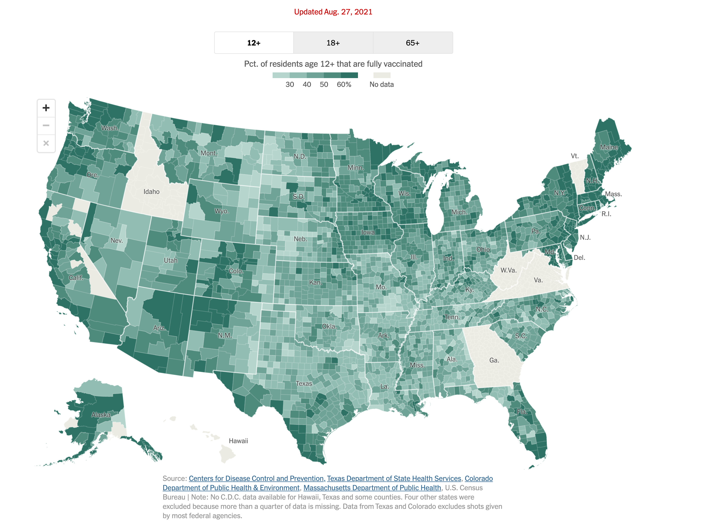
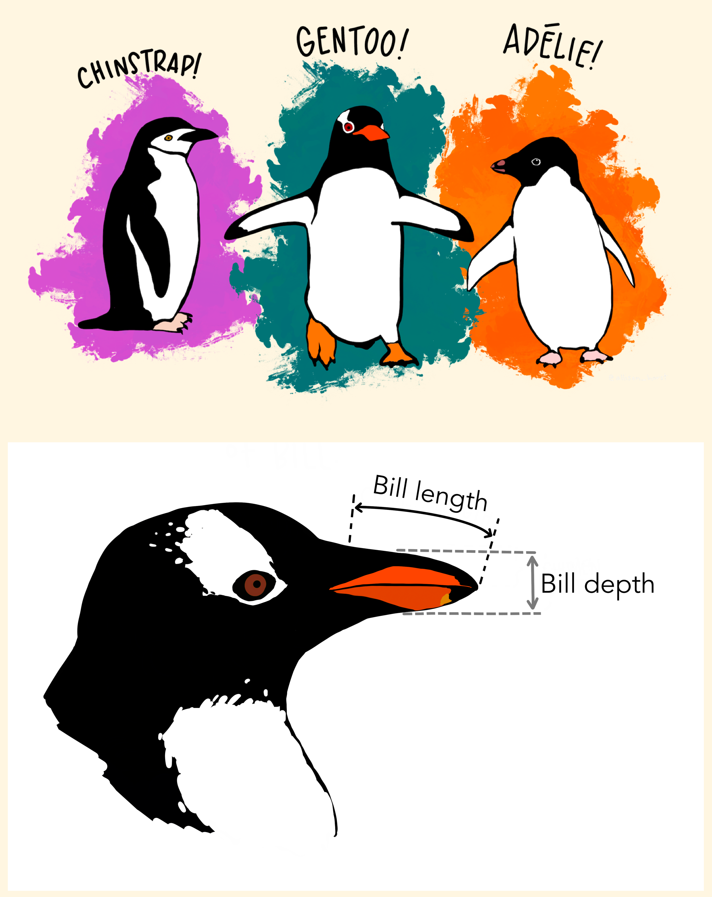
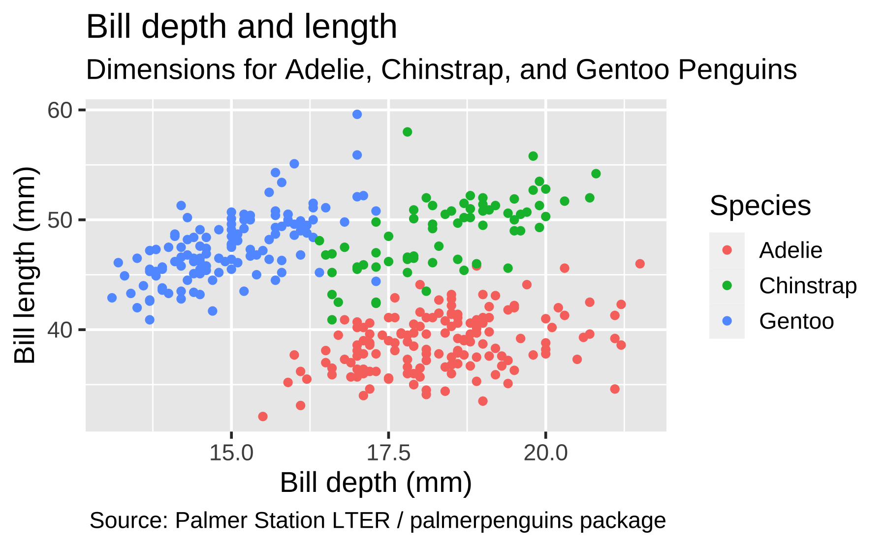
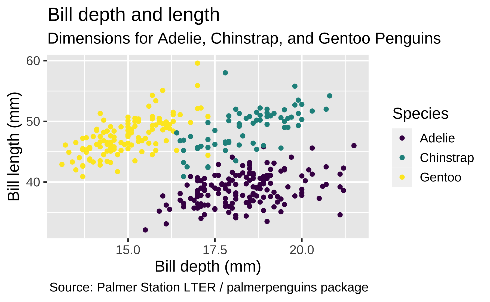

The grammar of graphics
Lecture 2
Dr. Benjamin Soltoff
Cornell University
INFO 3312/5312 - Spring 2023
1/26/23
Data visualization
Data visualization
“The simple graph has brought more information to the data analyst’s mind than any other device.”
John Tukey
- Data visualization is the creation and study of the visual representation of data
- Many tools for visualizing data – R is one of them
- Many approaches/systems within R for making data visualizations – ggplot2 is one of them, and that’s what we’re going to use
ggplot2 \(\in\) tidyverse
- ggplot2 is tidyverse’s data visualization package
ggin “ggplot2” stands for Grammar of Graphics- Inspired by the book Grammar of Graphics by Leland Wilkinson
Grammar of Graphics
A grammar of graphics is a tool that enables us to concisely describe the components of a graphic

Hello ggplot2!
ggplot()is the main function in ggplot2- Plots are constructed in layers
- Structure of the code for plots can be summarized as
ggplot(data = [dataset],
mapping = aes(x = [x-variable], y = [y-variable])) +
geom_xxx() +
other options- The ggplot2 package comes with the tidyverse
- For help with ggplot2, see ggplot2.tidyverse.org
Why do we visualize?
Why do we visualize?
- Discover patterns that may not be obvious from numerical summaries
Anscombe’s quartet
Summary statistics for Anscombe’s quartet
quartet |>
group_by(set) |>
summarise(
mean_x = mean(x),
mean_y = mean(y),
sd_x = sd(x),
sd_y = sd(y),
r = cor(x, y)
)# A tibble: 4 × 6
set mean_x mean_y sd_x sd_y r
<fct> <dbl> <dbl> <dbl> <dbl> <dbl>
1 I 9 7.50 3.32 2.03 0.816
2 II 9 7.50 3.32 2.03 0.816
3 III 9 7.5 3.32 2.03 0.816
4 IV 9 7.50 3.32 2.03 0.817Scatterplots for Anscombe’s quartet

Why do we visualize?
Discover patterns that may not be obvious from numerical summaries
Convey information in a way that is otherwise difficult/impossible to convey
Impact of Omicron variant on unvaccinated populations

COVID-19 vaccination in US Counties

ggplot2 ‚ù§Ô∏è üêß
ggplot2 \(\in\) tidyverse
Data: Palmer Penguins
Measurements for penguin species, island in Palmer Archipelago, size (flipper length, body mass, bill dimensions), and sex.

Rows: 344
Columns: 8
$ species <fct> Adelie, Adelie, Adelie, Adelie, Adelie, Adelie, Adel…
$ island <fct> Torgersen, Torgersen, Torgersen, Torgersen, Torgerse…
$ bill_length_mm <dbl> 39.1, 39.5, 40.3, NA, 36.7, 39.3, 38.9, 39.2, 34.1, …
$ bill_depth_mm <dbl> 18.7, 17.4, 18.0, NA, 19.3, 20.6, 17.8, 19.6, 18.1, …
$ flipper_length_mm <int> 181, 186, 195, NA, 193, 190, 181, 195, 193, 190, 186…
$ body_mass_g <int> 3750, 3800, 3250, NA, 3450, 3650, 3625, 4675, 3475, …
$ sex <fct> male, female, female, NA, female, male, female, male…
$ year <int> 2007, 2007, 2007, 2007, 2007, 2007, 2007, 2007, 2007…Coding out loud
Start with the
penguinsdata frame, map bill depth to the x-axis and map bill length to the y-axis. Represent each observation with a point and map species to the color of each point. Title the plot “Bill depth and length”
Start with the
penguinsdata frame, map bill depth to the x-axis and map bill length to the y-axis. Represent each observation with a point and map species to the color of each point. Title the plot “Bill depth and length”, add the subtitle “Dimensions for Adelie, Chinstrap, and Gentoo Penguins”
Start with the
penguinsdata frame, map bill depth to the x-axis and map bill length to the y-axis. Represent each observation with a point and map species to the color of each point. Title the plot “Bill depth and length”, add the subtitle “Dimensions for Adelie, Chinstrap, and Gentoo Penguins”, label the x and y axes as “Bill depth (mm)” and “Bill length (mm)”, respectively

Start with the
penguinsdata frame, map bill depth to the x-axis and map bill length to the y-axis. Represent each observation with a point and map species to the color of each point. Title the plot “Bill depth and length”, add the subtitle “Dimensions for Adelie, Chinstrap, and Gentoo Penguins”, label the x and y axes as “Bill depth (mm)” and “Bill length (mm)”, respectively, label the legend “Species”
Start with the
penguinsdata frame, map bill depth to the x-axis and map bill length to the y-axis. Represent each observation with a point and map species to the color of each point. Title the plot “Bill depth and length”, add the subtitle “Dimensions for Adelie, Chinstrap, and Gentoo Penguins”, label the x and y axes as “Bill depth (mm)” and “Bill length (mm)”, respectively, label the legend “Species”, and add a caption for the data source.
ggplot(data = penguins,
mapping = aes(x = bill_depth_mm,
y = bill_length_mm,
color = species)) +
geom_point() +
labs(title = "Bill depth and length",
subtitle = "Dimensions for Adelie, Chinstrap, and Gentoo Penguins",
x = "Bill depth (mm)", y = "Bill length (mm)",
color = "Species",
caption = "Source: Palmer Station LTER / palmerpenguins package")
Start with the
penguinsdata frame, map bill depth to the x-axis and map bill length to the y-axis. Represent each observation with a point and map species to the color of each point. Title the plot “Bill depth and length”, add the subtitle “Dimensions for Adelie, Chinstrap, and Gentoo Penguins”, label the x and y axes as “Bill depth (mm)” and “Bill length (mm)”, respectively, label the legend “Species”, and add a caption for the data source. Finally, use a discrete color scale that is designed to be perceived by viewers with common forms of color blindness.
ggplot(data = penguins,
mapping = aes(x = bill_depth_mm,
y = bill_length_mm,
color = species)) +
geom_point() +
labs(title = "Bill depth and length",
subtitle = "Dimensions for Adelie, Chinstrap, and Gentoo Penguins",
x = "Bill depth (mm)", y = "Bill length (mm)",
color = "Species",
caption = "Source: Palmer Station LTER / palmerpenguins package") +
scale_color_viridis_d()
ggplot(data = penguins,
mapping = aes(x = bill_depth_mm,
y = bill_length_mm,
color = species)) +
geom_point() +
labs(title = "Bill depth and length",
subtitle = "Dimensions for Adelie, Chinstrap, and Gentoo Penguins",
x = "Bill depth (mm)", y = "Bill length (mm)",
color = "Species",
caption = "Source: Palmer Station LTER / palmerpenguins package") +
scale_color_viridis_d()Start with the penguins data frame, map bill depth to the x-axis and map bill length to the y-axis.
Represent each observation with a point and map species to the color of each point.
Title the plot “Bill depth and length”, add the subtitle “Dimensions for Adelie, Chinstrap, and Gentoo Penguins”, label the x and y axes as “Bill depth (mm)” and “Bill length (mm)”, respectively, label the legend “Species”, and add a caption for the data source.
Finally, use a discrete color scale that is designed to be perceived by viewers with common forms of color blindness.
Argument names
You can omit the names of first two arguments when building plots with ggplot().
Aesthetics
Aesthetics options
Commonly used characteristics of plotting characters that can be mapped to a specific variable in the data are
colorshapesizealpha(transparency)
Color
Shape
Mapped to a different variable than color
Shape
Mapped to same variable as color
Size
Alpha

Mapping vs. setting
- Mapping: Determine the size, alpha, etc. of points based on the values of a variable in the data
- goes into
aes()
- goes into
- Setting: Determine the size, alpha, etc. of points not based on the values of a variable in the data
- goes into
geom_*()(this wasgeom_point()in the previous example, but we’ll learn about other geoms soon!)
- goes into
Faceting
Faceting
- Smaller plots that display different subsets of the data
- Useful for exploring conditional relationships and large data
Various ways to facet
In the next few slides describe what each plot displays. Think about how the code relates to the output.
Note: The plots in the next few slides do not have proper titles, axis labels, etc. because we want you to figure out what’s happening in the plots. But you should always label your plots!

Faceting summary
facet_grid():- 2 dimensional grid
rows = vars(<VARIABLE>), cols = vars(<VARIABLE>)- Alternative:
rows ~ cols
facet_wrap(): 1 dimensional ribbon wrapped according to number of rows and columns specified or available plotting area
Facet and color
Facet and color, no legend
Take a sad plot, and make it better
The American Association of University Professors (AAUP) is a nonprofit membership association of faculty and other academic professionals. This report by the AAUP shows trends in instructional staff employees between 1975 and 2011, and contains an image very similar to the one given below.
Each row in this dataset represents a faculty type, and the columns are the years for which we have data. The values are percentage of hires of that type of faculty for each year.
# A tibble: 5 × 12
facult…¹ `1975` `1989` `1993` `1995` `1999` `2001` `2003` `2005` `2007` `2009`
<chr> <dbl> <dbl> <dbl> <dbl> <dbl> <dbl> <dbl> <dbl> <dbl> <dbl>
1 Full-Ti… 29 27.6 25 24.8 21.8 20.3 19.3 17.8 17.2 16.8
2 Full-Ti… 16.1 11.4 10.2 9.6 8.9 9.2 8.8 8.2 8 7.6
3 Full-Ti… 10.3 14.1 13.6 13.6 15.2 15.5 15 14.8 14.9 15.1
4 Part-Ti… 24 30.4 33.1 33.2 35.5 36 37 39.3 40.5 41.1
5 Graduat… 20.5 16.5 18.1 18.8 18.7 19 20 19.9 19.5 19.4
# … with 1 more variable: `2011` <dbl>, and abbreviated variable name
# ¹​faculty_typeRecreate the visualization
In order to recreate this visualization we need to first reshape the data to have one variable for faculty type and one variable for year. In other words, we will convert the data from the long format to wide format.
But before we do so…
If the long data will have a row for each year/faculty type combination, and there are 5 faculty types and 11 years of data, how many rows will the data have?

pivot_*() function

pivot_longer()
- The first argument is
dataas usual. - The second argument,
cols, is where you specify which columns to pivot into longer format – in this case all columns except for thefaculty_type - The third argument,
names_to, is a string specifying the name of the column to create from the data stored in the column names of data – in this caseyear - The fourth argument,
values_to, is a string specifying the name of the column to create from the data stored in cell values, in this casepercentage
Pivot instructor data
library(tidyverse)
staff_long <- staff |>
pivot_longer(cols = -faculty_type, names_to = "year",
values_to = "percentage") |>
mutate(percentage = as.numeric(percentage))
staff_long# A tibble: 55 × 3
faculty_type year percentage
<chr> <chr> <dbl>
1 Full-Time Tenured Faculty 1975 29
2 Full-Time Tenured Faculty 1989 27.6
3 Full-Time Tenured Faculty 1993 25
4 Full-Time Tenured Faculty 1995 24.8
5 Full-Time Tenured Faculty 1999 21.8
6 Full-Time Tenured Faculty 2001 20.3
7 Full-Time Tenured Faculty 2003 19.3
8 Full-Time Tenured Faculty 2005 17.8
9 Full-Time Tenured Faculty 2007 17.2
10 Full-Time Tenured Faculty 2009 16.8
# … with 45 more rowsThis doesn’t look quite right, how would you fix it?
Some improvement…

More improvement

Goal: even more improvement!
I want to achieve the following look but I have no idea how!

Asking good questions
- Describe what you want
- Describe where you are
- Create a minimal reproducible example:
reprex::reprex()

library(scales)
staff_long |>
mutate(
part_time = if_else(faculty_type == "Part-Time Faculty",
"Part-Time Faculty", "Other Faculty"),
year = as.numeric(year)
) |>
ggplot(aes(x = year, y = percentage/100, group = faculty_type,
color = part_time)) +
geom_line() +
scale_color_manual(values = c("gray", "red")) +
scale_y_continuous(labels = label_percent(accuracy = 1)) +
theme_minimal() +
labs(
title = "Instructional staff employment trends",
x = "Year", y = "Percentage", color = NULL
) +
theme(legend.position = "bottom")